～好 戲 開 鑼・探 索 自 我～
在做中學（Learning by Doing）實踐童軍互助精神，淬鍊自立自強生活體驗，凝聚班級榮譽與團隊默契！
115 年 10 月 27 日（二）
至 10 月 28 日（三）
兩天一夜露營體驗
台南-尖山埤露營區
柳營區旭山里 60 號 (06-6233888)
師生共計 116 人
學生 106 人（男 48、女 58）+ 師長 10 人
- 生活教育：實踐國民須知，培養勤儉、服務、守法、合群與自我打理精神。
- 技能教育：落實童軍實作技能（生火、野炊、帳棚搭設、繩結、急救包紮）。
- 團體活動：小隊聯誼、團隊探索教育、山訓垂降挑戰、營火晚會凝聚向心力。
- 出發報到：115 年 10 月 27 日（二）上午 07:30 校園集合，08:00 準時出發。
- 集合演練：921 地震公園暨南投國際會展中心園區逃生避難演練。
- 活動賦歸：115 年 10 月 28 日（三）下午 16:20 預計返抵南投國中。
- 服裝規範：請一律著學校規定之運動服裝、運動球鞋。
活動採中隊競賽與班級小隊自治管理，落實「全員投保平安保險」、「乘車安全檢查」、「活動場域排查」與「醫護急救站隨行常駐」。各小隊活動嚴禁脫隊、私自離營或前往非指定水域，時時刻刻以安全為第一優先！
- ☑️ 健保 IC 卡（必備首選）
- ☑️ 少許零錢（勿帶過多現鈔）
- ☑️ 備用電話卡 / 學生證
- ☑️ 學校規定運動服裝一套
- ☑️ 換洗衣物 1~2 套、內衣褲
- ☑️ 保暖薄外套、禦寒防風衣
- ☑️ 運動鞋（禁皮鞋/涼鞋）、拖鞋
- ☑️ 多備 2~3 雙透氣襪子
- ☑️ 牙刷、牙膏、洗臉毛巾
- ☑️ 衛生紙、隨身濕紙巾
- ☑️ 乾淨塑膠袋 3~5 個（裝髒衣物）
- ☑️ 隨身防護口罩 2~3 片
- ☑️ 手電筒（夜間查舖與安全必備）
- ☑️ 輕便型雨衣、折疊雨傘
- ☑️ 遮陽帽、防曬用品
- ☑️ 水壺 / 環保隨手杯
- ☑️ 個人常用藥品（暈車藥、過敏藥）
❌ 嚴禁穿戴有礙活動進行之飾品：項鍊、戒指、手鐲、長垂耳環、皮鞋、裙子。
❌ 嚴禁攜帶危險物品（打火機、刀械、煙火炮竹）、菸酒、高額現金與昂貴電子遊戲機。手機請依學校管理辦法配合導師統一保管。
| 時間 | 活動項目 | 備註與內容 |
|---|---|---|
| 07:30-08:00 | 學校集合 | 921地震公園逃生演練 |
| 08:00-10:00 | 乘車出發 | 國道行車、安全檢查 |
| 10:00-11:00 | 喜相逢 | 營地環境認識、小隊編組 |
| 11:00-12:00 | 始業式 | 營規介紹、工作人員介紹 |
| 12:00-13:00 | 午餐時間 | 中式美味便當 |
| 13:00-14:00 | 野營常識 | 搭帳教學、器材使用領取 |
| 14:00-17:00 | 童軍技能教育 | 生火烹調、繩結、毒蛇、偽裝 |
| 17:00-19:00 | 晚餐(野炊) | 炊事競賽、小隊互助合作 |
| 19:10-21:30 | 營火晚會 | 班級節目、隊輔熱舞、燭光夜語 |
| 21:30-22:30 | 盥洗、宵夜 | 整理儀容、享用宵夜 |
| 22:30----- | 就寢＆查舖 | 清點人數、熄燈安歇 |
| 時間 | 活動項目 | 備註與內容 |
|---|---|---|
| 06:00-06:30 | 起床號 | 做個跟太陽賽跑的人 |
| 06:30-07:20 | 活力有氧 | 早操晨檢、內務檢查 |
| 07:20-08:00 | 美味早餐 | 中式合菜元氣早餐 |
| 08:00-11:30 | 山訓與探索教育 | 垂降、攀岩、水彈、獨木橋、跳繩 |
| 11:30-14:00 | BBQ 烤肉午餐 | 戶外野趣烤肉餐 |
| 14:00-15:00 | 結訓典禮 | 炊事、晚會、生活教育、總錦標頒獎 |
| 15:00-16:20 | 平安抵校 | 互道珍重，預計抵校 16:20 |
| 職稱 | 師長姓名 | 男生 | 女生 | 合計 | 乘車車次 | 職掌與守則 |
|---|---|---|---|---|---|---|
| 校長 | 劉O彥 | - | - | - | 全校巡察 | 整體活動最高指揮與巡視關懷 |
| 學務主任 | 董O遠 | - | - | - | 1 車 | 第 1 車隨車總指揮、全隊秩序與安全督導 |
| 訓育組長 | 姚O勤 | - | - | - | 丁 車 | 第 丁 車隨車主管、活動時程與行程協調 |
| 801 導師 | 黃O月 | 10 | 7 | 17 | 3 車 | 801 班生活照護、點名查舖、野炊指導 |
| 802 導師 | 黃O君 | 6 | 12 | 18 | 2 車 | 802 班生活照護、點名查舖、野炊指導 |
| 803 導師 | 林O玟 | 6 | 9 | 15 | 3 車 | 803 班生活照護、點名查舖、野炊指導 |
| 804 導師 | 李O儒 | 7 | 8 | 15 | 2 車 | 804 班生活照護、點名查舖、野炊指導 |
| 805 導師 | 林O銓 | 7 | 4 | 11 | 1 車 | 805 班生活照護、點名查舖、野炊指導 |
| 806 導師 | 許O玉 | 4 | 5 | 9 | 1 車 | 806 班生活照護、點名查舖、野炊指導 |
| 807 導師 | 黃O慧 | 8 | 13 | 21 | 丁 車 | 807 班生活照護、點名查舖、野炊指導 |
| 團控經理 | 邱O凱 | 48 | 58 | 106 | 全隊機動 | 旅行社領隊、隊輔調度、安全戒護總負責 |
* 學生合計 106 人（男生 48 人、女生 58 人），隨隊教職員合計 10 人。所有師生姓名第二個字均已寫為「O」。
隨車師長：董O遠主任、林O銓老師、許O玉老師
806 班（9 人）：男 4、女 5
亮點：含全校 1 位素食同學（805班 張O瑜）
隨車師長：黃O君老師、李O儒老師
804 班（15 人）：男 7、女 8
人數最多車輛之一，配置兩位隨車導師全權照護
隨車師長：黃O月老師、林O玟老師
803 班（15 人）：男 6、女 9
男生人數達 16 人，童軍生火與帳棚搭建主力車隊
隨車師長：姚O勤組長、黃O慧老師
全班獨立成車，由訓育組長親自隨隊督導
1. 上車依編定座位依序就坐，全程繫妥安全帶，非必要不得隨意離座走動。
2. 車內禁止大聲喧嘩、飲食請保持車廂整潔；頭手切勿伸出窗外；遇突發狀況聽從隨車師長與導隊輔引導。
| 帳號 | 班級 | 人數 | 入住學生名單 | 乘車 |
|---|---|---|---|---|
| A01 | 801 | 5人 | 林O諼、張O鈞、張O偉、吳O岷、谷O恩 | 3 車 |
| A02 | 801 | 5人 | 湯O丞、陳O廷、許O瑋、陳O宗、賴O豪 | 3 車 |
| A03 | 802 | 3人 | 黃O睿、葉O毅、廖O惟 | 2 車 |
| A04 | 802 | 3人 | 劉O宇、張O瑋、簡O宸 | 2 車 |
| A05 | 803 | 3人 | 許O煜、陳O熙、蔡O呈 | 3 車 |
| A06 | 803 | 3人 | 陳O天、陳O瑜、李O成 | 3 車 |
| A07 | 804 | 3人 | 陳O光、蕭O皓、陳O昇 | 2 車 |
| A08 | 804 | 4人 | 林O澄、許O翔、劉O振、張O帆 | 2 車 |
| A09 | 805 | 4人 | 林O竹、郭O佑、陳O庭、嚴O諭 | 1 車 |
| A10 | 805 | 3人 | 吳O鋒、簡O宇、張O瑜 素食 | 1 車 |
| A11 | 806 | 4人 | 吳O文、曾O承、洪O倫、張O棋 | 1 車 |
| A12 | 807 | 4人 | 吳O霆、洪O熙、張O睿、黃O壬 | 丁 車 |
| A13 | 807 | 4人 | 呂O辰、林O福、林O旻、許O瀚 | 丁 車 |
* 男生共 48 人，分配於 13 頂屋式帳。每帳設室長 1 名負責內務整潔與就寢點名。
| 帳號 | 班級 | 人數 | 入住學生名單 | 乘車 |
|---|---|---|---|---|
| B01 | 801 | 3人 | 林O言、劉O含、藍O詒 | 3 車 |
| B02 | 801 | 4人 | 林O嫻、江O婷、陳O翎、陳O涵 | 3 車 |
| B03 | 802 | 4人 | 李O妮、李O甯、鄭O琳、黃O蒂 | 2 車 |
| B04 | 802 | 4人 | 簡O懿、黃O薇、賴O其、鐘O彤 | 2 車 |
| B05 | 802 | 4人 | 郭O琪、廖O昕、胡O薰、張O桔 | 2 車 |
| B06 | 803 | 5人 | 王O芝、石O芳、吳O恩、吳O蓉、潘O汝 | 3 車 |
| B07 | 803 | 4人 | 邱O慈、陳O羽、謝O璇、沈O愉 | 3 車 |
| B08 | 804 | 4人 | 王O涵、陳O妘、張O晴、劉O硯 804 | 2 車 |
| B09 | 804 | 4人 | 羅O茜、簡O璇、余O婷、洪O瑄 | 2 車 |
| B10 | 805 | 4人 | 劉O硯 805、吳O瑜、黃O薇、鄭O妮 | 1 車 |
| B11 | 806 | 5人 | 陳O臻、李O榕、林O妤、范O英、廖O慈 | 1 車 |
| B12 | 807 | 4人 | 張O瑄、郭O岑、黃O浠、詹O靜 | 丁 車 |
| B13 | 807 | 5人 | 林O妤、吳O桐、陳O錥、蕭O晨、簡O緹 | 丁 車 |
| B14 | 807 | 4人 | 廖O涵、陳O伶、古O潼、胡O熙 | 丁 車 |
💡 名冊查核備註：B08 帳（804班）與 B10 帳（805班）各有一位女同學名為「劉O硯」，經學籍底冊校對，804 班為座號 11 號、805 班為座號 13 號，身分證與學號皆相異，確認為兩位同名同姓同學，手冊資料完全無誤。
劉O含、林O言、谷O恩、張O鈞、張O偉、林O諼、陳O宗、賴O豪、藍O詒
林O嫻、陳O翎、江O婷、陳O涵、湯O丞、吳O岷、許O瑋、陳O廷
黃O薇、廖O惟、賴O其、簡O懿、鐘O彤、張O瑋
葉O毅、李O甯、李O妮、鄭O琳、黃O蒂、黃O睿
廖O昕、胡O薰、郭O琪、張O桔、簡O宸、劉O宇
王O芝、石O芳、吳O恩、吳O蓉、潘O汝、許O煜、陳O熙、蔡O呈
邱O慈、陳O羽、謝O璇、沈O愉、陳O天、陳O瑜、李O成
陳O光、張O帆、林O澄、劉O振、許O翔、蕭O皓、陳O昇
張O晴、洪O瑄、余O婷、簡O璇、陳O妘、羅O茜、王O涵、劉O硯
林O竹、吳O鋒、簡O宇、郭O佑、陳O庭、嚴O諭、張O瑜 素食
劉O硯、吳O瑜、黃O薇、鄭O妮
廖O慈、洪O倫、范O英、林O妤、張O棋、吳O文、陳O臻、李O榕、曾O承
郭O岑、黃O浠、詹O靜、張O瑄、胡O熙、古O潼、陳O伶
吳O桐、林O妤、陳O錥、廖O涵、蕭O晨、簡O緹
吳O霆、呂O辰、林O福、林O旻、洪O熙、張O睿、許O瀚、黃O壬
搭帳區門口順風、炊事區靠水下風處、活動場、WC、垃圾場。
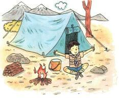
營釘14支、主繩2條、副繩16條、營柱、雷管雷帽、內外帳。
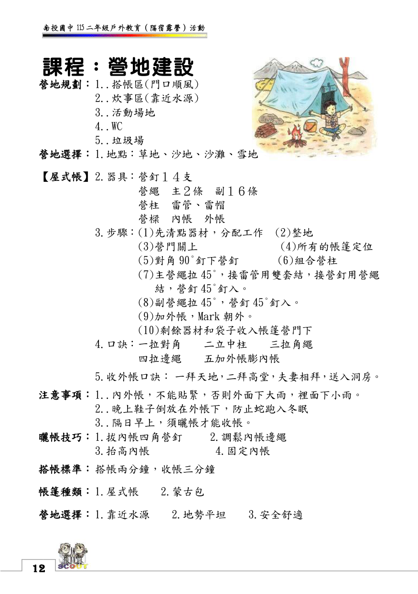
鋪平內帳 ➔ 組合四柱 ➔ 釘四角撐起 ➔ 短營柱穿外帳組合。
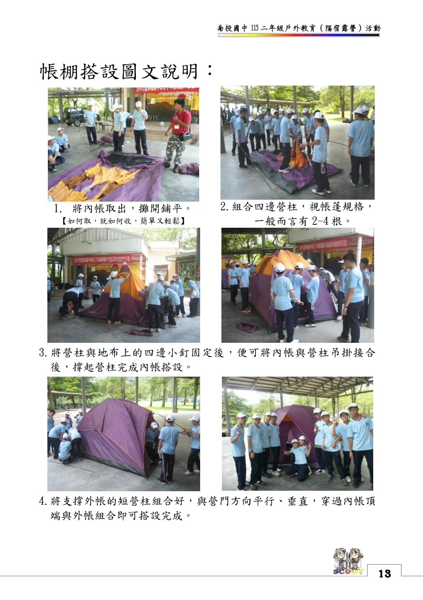
口訣：一拉對角二立中柱...；收外帳：一拜天地二拜高堂...。
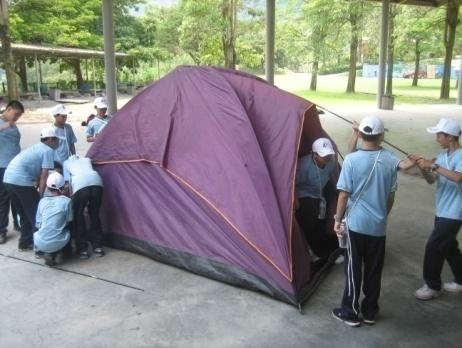
基礎繩端防脫結眼，防止繩頭脫落。
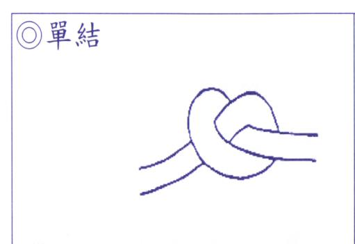
比單結大、易解，登山防墜必備。
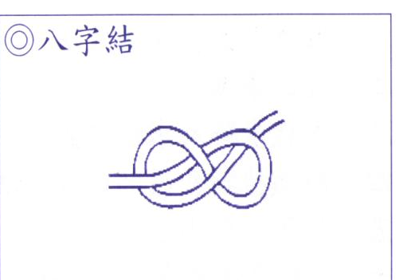
拉單端即解開，臨時牽繫與快拆首選。
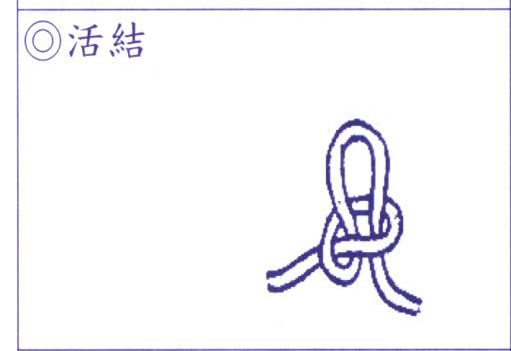
接等粗繩，急救三角巾包紮首選。
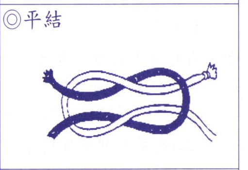
專門連接兩條不同粗細或材質繩索。
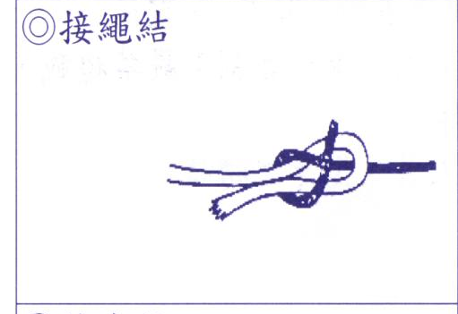
工程結之母！繫營柱雷管、開頭與收尾。
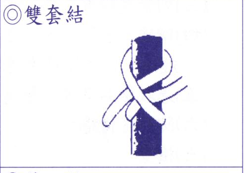
繞樹幹打兩次半結，緊密栓繫不滑脫。
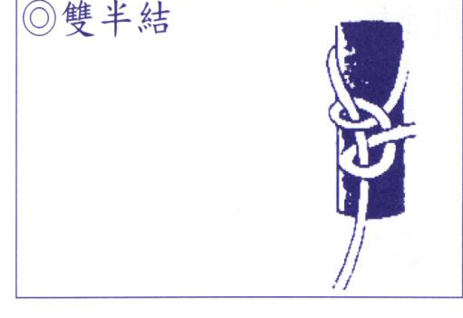
滑動調長度，拉緊自動卡死微調張力。
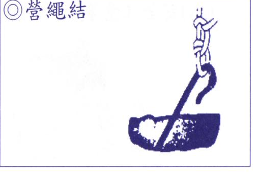
紅針指北（磁北），標準 16 方位判讀。
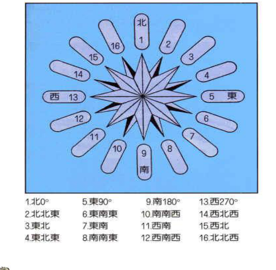
時針對太陽，時針與 12 點角平分線為正南。
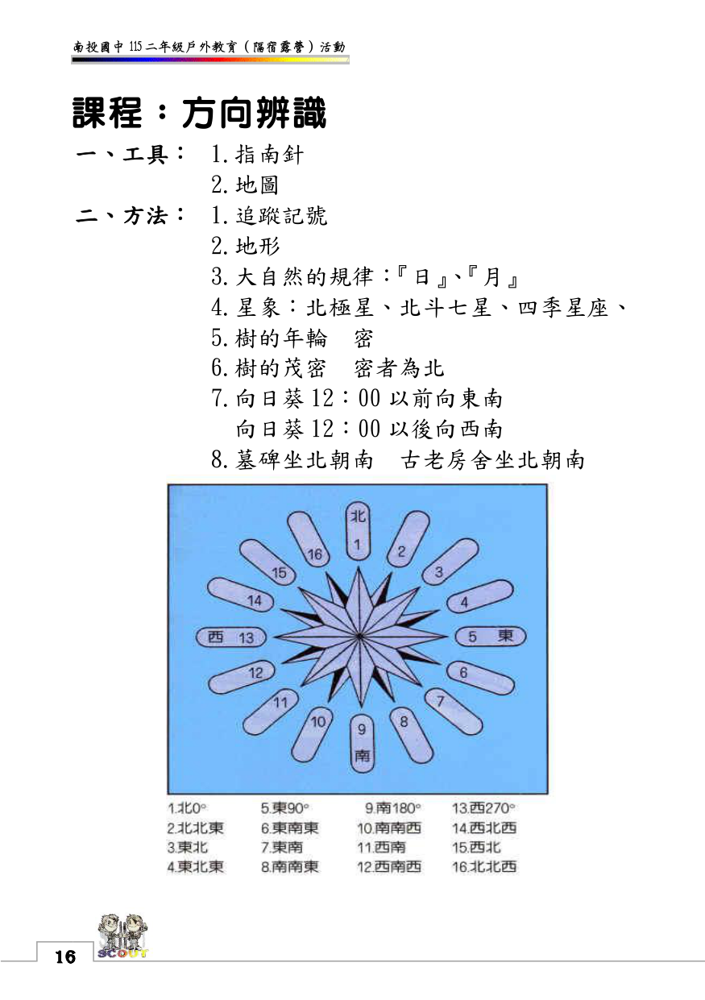
北斗七星勺口延伸 5 倍；仙后座 W 開口法。
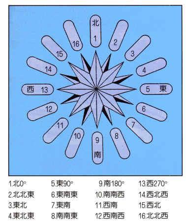
年輪密者為北；向日葵午前向東南午後向西南。
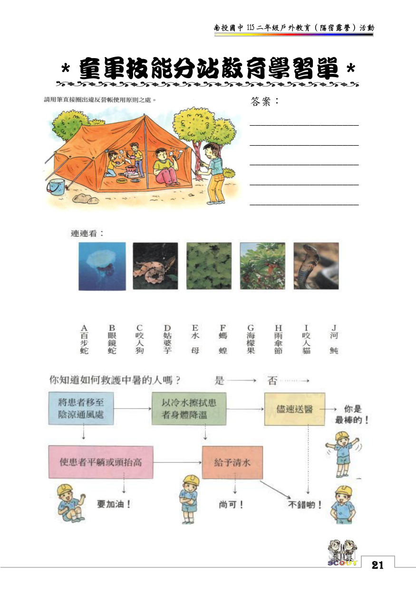
清水沖洗、無菌紗布直接加壓止血、抬高傷肢。
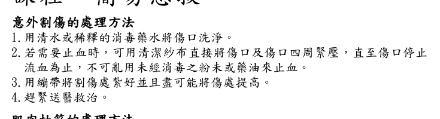
反向伸展大原則：小腿抽筋將腳掌向上扳屈。
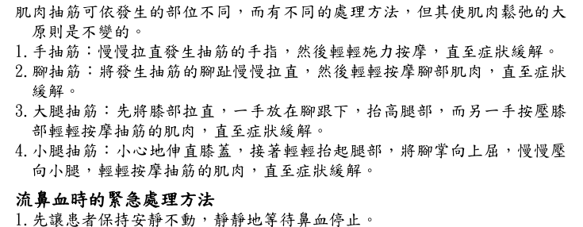
坐下頭微前傾（切忌後仰防嗆血），捏鼻翼軟骨。
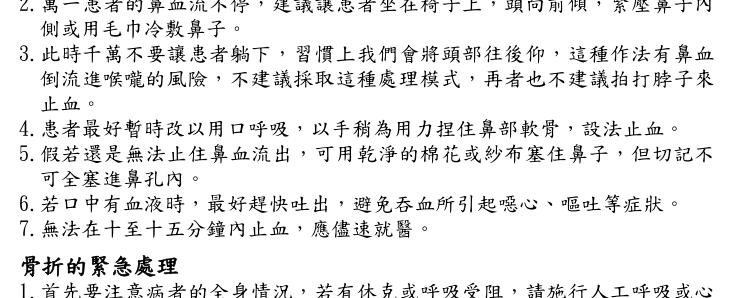
切勿推拿，就地取材夾板超過上下兩關節固定。
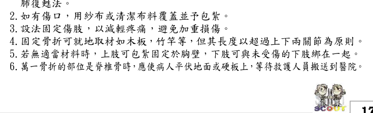
吻端尖翹、黑色三角形側斑，劇痛腫脹出血。
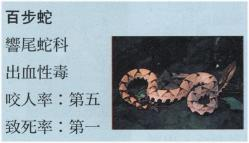
黑白環紋、致死率極高，引起呼吸麻痺衰竭。
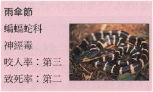
龜殼花、赤尾青竹絲、眼鏡蛇、鎖鏈蛇辨別。
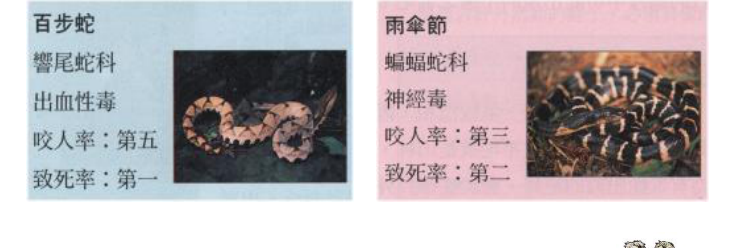
五要：視為毒蛇、記特徵、脫飾品、包紮、送醫；五不：不割、不吸、不冰、不紮死、不喝酒！
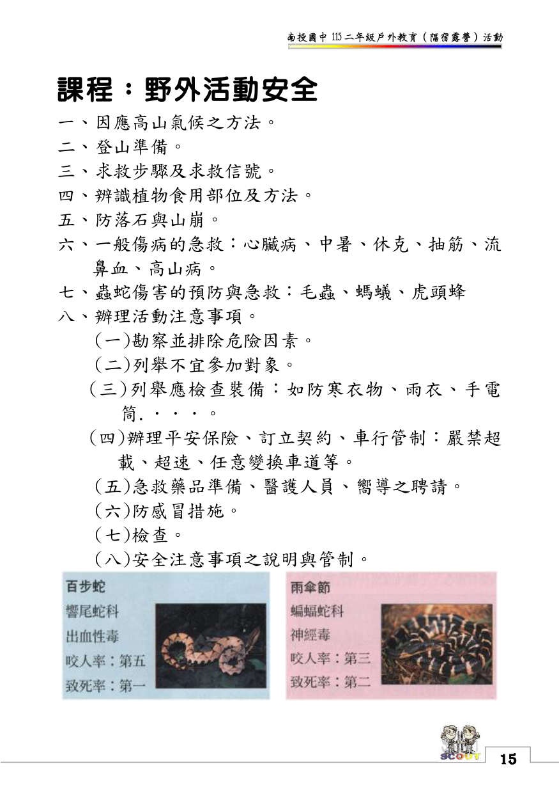
營火象徵熱情、團結與生命力！在熊熊火光中，各班展現自編隊呼與動感歌舞競賽，隊輔勁歌熱舞嗨翻全場。
薪火相傳儀式：晚會尾聲轉入「燭光夜語」，師長點燃象徵智慧與關懷的心燈，傳遞到每一位同學手中。靜下心來回顧國中成長點滴，感恩師長的諄諄教誨，同儕彼此互許承諾，將這份溫暖深植心底。
- 露營反原則辨別：營帳不可搭在枯樹下或低窪處、生火不可緊貼帳篷、水桶與砂土需備妥。
- 繩結配對：平結包紮傷口、八字結防止脫繩、雙套結綁營柱、營繩結調鬆緊。
- 中暑急救流程：移至陰涼通風處 ➔ 冷水擦拭降溫 ➔ 平躺抬高腳部 ➔ 補充水分 ➔ 儘速送醫。
| 序號 | 班級 | 學生姓名 | 性別 | 車次 | 帳棚編號 | 膳食野炊組別 | 備註 |
|---|